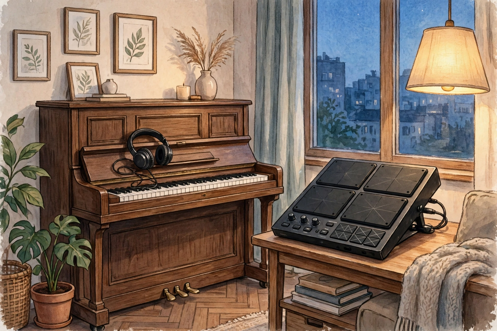

この記事の要点
- ピアノやドラム、歌の練習をしたいけれど、大きな音を出せないとき、どうすればいいのでしょうか？
- ピアノ、ドラム、歌は、音の出し方が違います。
- 電子ピアノのように、音量を調整できる楽器は、音を小さくしやすい場合があります。
⏱ 急いでいる人へ ― 今夜やること3つ
📖 目次
💡 まず知っておきたいこと：楽器によって、音の大きさも、対策も違います
ピアノ、ドラム、歌は、音の出し方が違います。ピアノは、鍵盤を叩く音と、弦の振動が、床や壁を通って伝わる場合があります。ドラムは、叩くときの衝撃が、床に直接伝わりやすい傾向があります。歌は、声そのものが、壁や隙間を通って伝わる場合があります。まずは、どの楽器の、どの音が気になるのかを、はっきりさせることが大切です。完全に音を消すことは、どの楽器でも、現実的にはかなり難しいことです。
🔊 音の伝わり方の仕組み ― 空気を伝わる音と、床を伝わる振動
楽器の音の伝わり方は、大きく二つあります。空気を伝わって隙間を通り抜ける音と、床や壁を振動させて伝わる音（固体を伝わる音）です。どちらが中心かで、対策の考え方も変わります。
| 楽器 | 伝わり方の中心 | 特徴の目安 |
|---|---|---|
| ピアノ | 空気の音＋床・壁を伝わる振動 | 弦の響きは空気を伝わりますが、打鍵音やペダルの振動は、脚を通じて床に伝わる場合があります |
| 電子ピアノ | 床を伝わる振動が残りやすい | ヘッドホンを使えば響きは出ませんが、打鍵音とペダルの振動は物理的な音として残ります |
| ドラム | 床を伝わる振動が大きい | スティックやペダルの衝撃が、床に直接伝わりやすい楽器です。電子ドラムでも、パッドを叩く衝撃とペダルの振動は残ります |
| 歌 | 空気を伝わる音が中心 | 声は主に空気を伝わり、壁やドアの隙間を通り抜けます。大きな声は、壁を伝わって届く場合もあります |
「音量を下げる」だけでは足りない場合があり、伝わり方ごとに分けて考えるのが近道です。建物の構造によっても伝わり方は変わるため、あくまで目安として捉えてください。
ピアノの場合
電子ピアノのように、音量を調整できる楽器は、音を小さくしやすい場合があります。ヘッドホンで練習できる電子ピアノは、部屋に音を出さないので、隣への漏れを減らす助けになります。アコースティックピアノの場合は、弱く弾く、消音のための道具を使う、といった方法があります。ただし、音色や、弾き心地が変わる場合があります。ピアノの下に、マットを敷くことは、床への振動を考える助けになる場合があります。
ドラムの場合
ドラムは、叩くときの衝撃が、床に伝わりやすい楽器です。電子ドラムのように、パッドを叩いて、ヘッドホンで音を聴く方法は、音を小さくしやすい考え方です。アコースティックドラムの場合は、消音パッドを使う、弱く叩く、といった方法があります。ただし、叩く感触が変わる場合があります。床に、防振マットや、厚いマットを敷くことは、振動の伝わりを考える助けになる場合があります。
🎤 歌の場合
歌は、声そのものが、壁や隙間を通って伝わる場合があります。声の大きさを控える、壁から離れて歌う、ドアや窓の隙間を意識する、といった工夫は、無理なく続けやすい方法です。マイクとヘッドホンを使って、自分の声を確認しながら練習する方法もあります。ただし、声を小さくすると、歌い方が変わる場合があります。練習の目的に合っているかどうかを、考えてみてください。
🛠 楽器ごとの具体策
仕組みを踏まえた工夫の目安です。「これで大丈夫」と言い切れるものではなく、住まいの構造に合わせて組み合わせるものです。
ピアノ・電子ピアノ
- 床との間を見直す ― 楽器の下やペダルの下に厚手のマットを敷くと、振動が床に伝わる経路を考える助けになります
- 消音の道具は試してから ― アコースティックピアノ向けの消音道具は、音色や弾き心地が変わる場合があります。可能なら試奏やレンタルで確かめてから選ぶのが無難です
ドラム・電子ドラム
- 防振の重ね敷き ― 防振マットと厚手のマットを重ねる、ドラム用の防振台を使うなど、衝撃が床に届く前に受け止める工夫が中心です。とくにバスドラムのペダルまわりは振動が大きい部分です
- アコースティックドラムは場所を選ぶ ― 生ドラムの音量と振動は集合住宅では収まりにくい場合が多く、スタジオなどと使い分けるのが現実的です
歌
- 壁と隙間を意識する ― ドアや窓の隙間、換気口まわりが伝わりやすい経路です。歌う位置を壁やドアから離すだけでも、届き方が変わる場合があります
- 練習内容で分ける ― 発声そのものの練習と、曲を通す練習では出る音量が違います。大きな声が必要な部分は時間帯を選ぶ考え方もあります。歌用の防音グッズにも効果の差があるため、目安として捉えてください
🕰️ 時間帯と練習量の考え方
楽器の練習は、音の大きさだけでなく「いつ、どのくらい続くか」も関わります。目安として、多くの人が眠る夜遅い時間帯は避け、周りが起きている時間に寄せるほうが受け止められやすい傾向があります。ただし、何時までなら良いという一律の決まりはありません。マンションの管理規約で演奏時間や可否が定められている場合もあるため、まずは規約の確認をしてみてください。
練習量は、長時間続けるより短く区切って休みを挟むほうが、周りにも自分にも負担が少ない考え方があります。また、毎日だいたい同じ時間帯だと、周りの人も予測しやすくなり、受け止め方が変わる場合があります。あくまで傾向の話として捉えてください。
🤝 近所への声かけ・相談の進め方
集合住宅で完全に無音の練習は難しいため、音の対策と同じくらい、周りとの関係づくりが大切になります。
- 先にひと言、挨拶しておく ― 練習を始めるタイミングで「練習をすることがあります。うるさかったら教えてください」と伝えておくと、相手も言い出しやすくなります
- 苦情が来たら、まず事実を確認する ― その場で言い返さず、いったん受け止めるのが無難です。「いつ、どんな音か」を聞くと、自分の練習と結びつけて考えられます。記録も役立ちます（騒音の記録シート）
- 妥協点を一緒に探す ― 「この時間帯なら大丈夫」「この曜日は避ける」など、時間や曜日の調整は、双方が歩み寄りやすい落としどころです
- こじれそうなら第三者を通す ― 直接では難しい場合は、管理会社や大家を通す選択肢があります。進め方は対処のフローチャートや苦情が来たときの対応も参考にしてください
なお、このサイトでは法律的な判断は扱っていません。具体的なトラブルの判断が必要な場合は、専門家への相談をご検討ください。
❓ よくある質問
- Q. 電子ピアノなら、夜にヘッドホンで練習しても大丈夫ですか？
- A. 響きは出ませんが、打鍵音とペダルの振動は残り、建物の構造によっては下の階に伝わる場合があります。夜遅い時間は、マットなどの工夫と時間帯への配慮が目安です。
- Q. 防音室や防音ブースを置けば解決しますか？
- A. 音を小さくする助けにはなりますが、広さや重さ、賃貸での設置の可否など、条件によって向き不向きがあります。振動までは防ぎきれない場合もあるため、過信は禁物です。選び方は防音ブースの選び方、自作の考え方はDIY防音室の考え方にまとめています。
- Q. 歌の練習で、自分の声が外に漏れるのを減らせますか？
- A. 声は空気を伝わるため、ドアや窓の隙間を意識する、壁から離れて歌うといった工夫で、届き方が変わる場合があります。ただし工夫だけで漏れをなくすことは難しく、大きな声の練習は時間帯を選ぶのが現実的です。考え方は声の吸音の考え方も参考にしてください。なお、自宅では抑えた練習、思いきり出したい日はスタジオ、と場所を使い分ける人もいます（自分の音の対策）。
⚠️ 注意
このページの内容は、楽器の専門的なアドバイスではありません。楽器や機材の選び方は、目的や予算によって違います。目安として、無理のない範囲で考えてみてください。大きな音を出す練習が必要な場合は、練習場所や、専門の施設の利用も、ご検討ください。